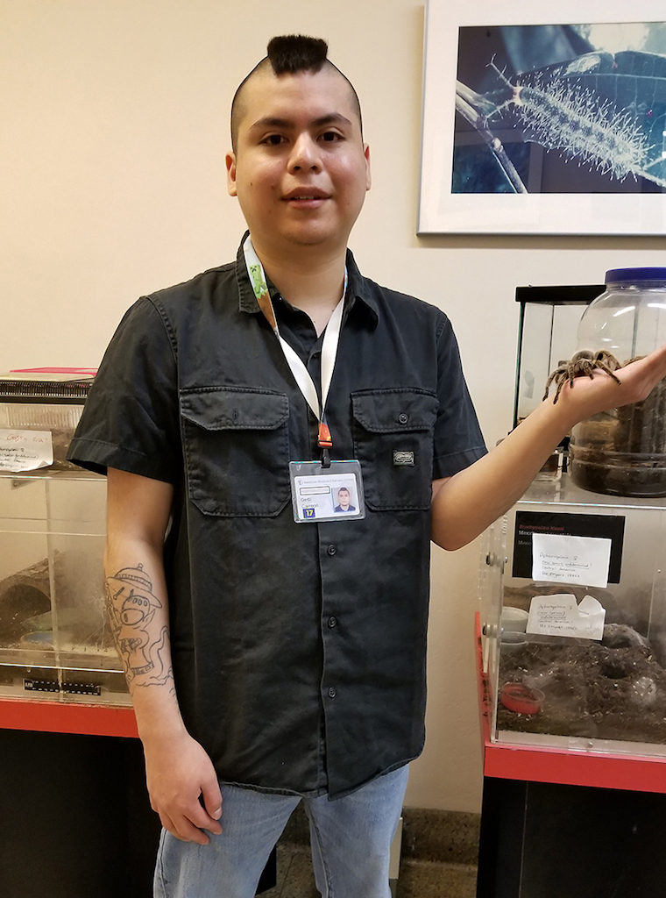
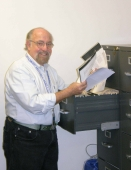
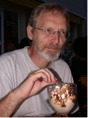
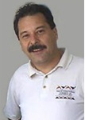
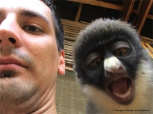
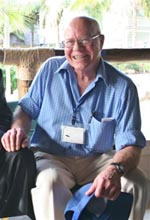

Current Volunteers | Former Volunteers
Volunteers and Field Assistants
The Arachnology Lab at the AMNH has had many dedicated volunteers work with us over the years. With their help we have been able to accomplish a great deal of work. We would like to thank all of our volunteers for their invaluable assistance. If you are interested in volunteering in the Arachnology Lab at the AMNH please visit the Volunteer Department.
Current Volunteers
 |
Victoria Long Vistoria is currently assisting with DNA extractions and PCR reactions, as well as curatorial tasks in the main collections. |
 |
George Tsinias George helps with curatorial tasks in the main collection, like labeling and rebottling material. |
 |
Christian Liriano Christian is currently preparing material for loans in the spider collection. He also showed great interest for harvetmen. |
Former Volunteers (2002-2019)
|  | Gerbi Carreon Gerbi performed various curatorial activities in the spider collection. He also received training to do DNA extractions and PCRs in the molecular lab. |
| Debbie Alwill Debbie assisted with labelling and rebottling specimens and packing loans. |
 |
Jasmine Alim Jasmine assisted in the molecular lab with DNA extractions and PCR reactions, also organizing DNA samples. |
Adrian Armstrong
Adrian is the Invertebrate Conservation Scientist in the provincial government Nature Conservation body in KwaZulu-Natal, South Africa. He has generously donated material to the AMNH for more than ten years.
 |
Reginald Christiaan Reginald is a scorpion enthusiast who assisted Prendini with field collections of scorpions in South Africa. |
Mark Cooper
Mark is a myriapodologist who graduated with a Masters from the University of Cape Town. He accompanied Prendini on several expeditions to collect arachnids in South Africa.
|  | Howard W. Fiedler Howard assisted with rebottling specimens, organization of specimen and reprint collections, recording scorpion measurement data and digitizing handwritten catalogs. |
 |
Stefan Foord Stefan is an arachnologist and professor at the University of Venda, South Africa who has generously donated material to the AMNH for several years. |
| Ann Garbacki Ann assisted with labelling of specimens and inventorying specimens. |
Tom Gartner
Tom assisted with sorting and labeling the Arachnid and Myriapod Collections and packing and unpacking loans.

Patrick Gildenhuys
Patrick is a tarantula enthusiast who accompanied Prendini on several expeditions to collect arachnids in South Africa and neighboring countries, and has generously donated material to the AMNH.
 |
Charles Haddad Charles is an arachnologist and professor at the University of the Free State, Bloemfontein, South Africa who has generously donated material to the AMNH for several years. |
Peter Hawkes
Peter is an entomologist who runs AfriBugs, an EIA in South Africa. He has generously donated material to the AMNH for several years.
|  | Siegfried Huber Since 2000, Siegfried has conducted expeditions to Oman, Saudi Arabia, Thailand, and New Caledonia, and elsewhere, collecting arachnids. He has generously donated specimens collected during his travels to the AMNH. |
Jeremy Huff
See Former Employees
Dawid Jacobs
Dawid is an entomologist who assisted Prendini with fieldwork in South Africa and generously donated material to the AMNH for several years.
 |
Simone Longe Simone assisted in the molecular lab with DNA extractions and PCR reactions, also organizing DNA samples. |
Allyson Mellone
Allyson assisted with labelling and rebottling specimens.
|  | Warren Savary Warren Savary, a former compliance officer at the U.S. Food and Drug Administration and Field Associate of the California Academy of Sciences, served as research collaborator and webmaster for the NSF-funded REVSYS Vaejovidae grant and, from 2007-2012, as research collaborator and webmaster for the BS&I Solifugae grant. He visited the AMNH Arachnid and Myriapod Collections on several occasions to sort and identify solifuges and vaejovid scorpions. |
 |
Tom Sullivan Tom is Secretary of the New York Entomological Society. He assisted with sorting and labeling the Arachnid and Myriapod Collections, packing and unpacking loans, and maintenance of the live arachnids. |
 |
Rick West Rick West, one of the world's authorities on tarantulas (Theraphosidae), has traveled to over 27 countries to study them. Rick has generously donated interesting arachnids to the AMNH for many years. |
Asel Zhetigenova
Asel assisted with labelling and rebottling specimens.
Howard Bichard
Howard accompanied Prendini on several expeditions to collect arachnids in South Africa.
Abigail Carlton
Abigail assisted with sorting, rebottling, labeling, reorganizing, and databasing specimens and tissue samples in the collection.
Ofelia Delgado
See Former Employees
Suzanna Dodd
Suzanna rebottled the type collection, part of the main collection, and assisted with labeling new acquisitions.
Carine Galvão
Carine assisted with the curation of an extensive collection of scorpions extracted from pitfall traps placed across southern California by the U.S. Geological Survey (USGS), San Diego between 1996 and 2006.
Tiffany Gentry
Tiffany assisted with sorting, rebottling, labelling, reorganizing, and databasing specimens and tissue samples, and with sorting and filing the Arachnid and Myriapod Reprint Collection.
Randy Mercurio
See Former Employees
Israel Na'aman
Israel received his Masters from the Hebrew University of Jerusalem. During a short visit to the AMNH, he digitized part of the former Prendini scorpion collection, now incorporated into the AMNH collections of Arachnida and Myriapoda.
Danielle Parsons
Danielle assisted with sorting, rebottling, labelling, reorganizing, and databasing the arachnid collection.
Fabienne Paumet
Fabienne assisted with sorting, rebottling, labelling, reorganizing, and databasing the arachnid collection.
Warren Schmidt
Warren accompanied Prendini on an expedition to collect arachnids in Malawi.
Susan Tosier
Susan assisted with sorting, rebottling, labeling and reorganizing, and databasing the arachnid collection.
Peg Werns
Peg assisted with sorting, rebottling, labeling, reorganizing, and databasing specimens and tissue samples.
Abigail assisted with sorting, rebottling, labeling, reorganizing, and databasing specimens and tissue samples in the collection.
Ofelia Delgado
See Former Employees
 |
David Desoeur David graduated with a B.Sc. in Biology from the University of Guelph and was interested in the taxonomy of Florida Centruroides. In 2008, he travelled to Florida and the Keys to collect Centruroides samples for morphology and DNA isolation. |
Suzanna Dodd
Suzanna rebottled the type collection, part of the main collection, and assisted with labeling new acquisitions.
 |
Ian Engelbrecht Ian was the Invertebrate Conservation Scientist in the provincial government Nature Conservation body in Gauteng, South Africa. He started participating in field expeditions for the AMNH in 2005 with an expedition to the Northern Cape and southern Namibia and has since undertaken numerous other trips and generously donated material to the collection. |
Carine Galvão
Carine assisted with the curation of an extensive collection of scorpions extracted from pitfall traps placed across southern California by the U.S. Geological Survey (USGS), San Diego between 1996 and 2006.
Tiffany Gentry
Tiffany assisted with sorting, rebottling, labelling, reorganizing, and databasing specimens and tissue samples, and with sorting and filing the Arachnid and Myriapod Reprint Collection.
 |
Ilsa Kaim Ilsa volunteered at the AMNH for over 20 years. Between 2004-2011, she worked with the Arachnology Group to database the reprint collection in Endnote, and she also databased the type collection. |
|  |
Sergios-Orestis Kolokotronis Sergios holds a Ph.D. in Ecology & Evolutionary Biology from Columbia University and had a postdoc in the AMNH Sackler Institute for Comparative Genomics and Center for Conservation Genetics, where he coordinated the DNA Barcoding Initiative for Conservation. He created and maintained this website from 2006 until 2008.
|
 |
Sulata Maity Sulata volunteered in the Molecular Systematics Laboratory checking DNA concentration with nanodrop. |
 |
Kari McWest Kari received his Master's West Texas A&M University, Canyon, where he studied scorpions under David Sissom. He assisted the NSF-REVSYS Vaejovidae project with fieldwork in Mexico and the U.S. |
Randy Mercurio
See Former Employees
Israel Na'aman
Israel received his Masters from the Hebrew University of Jerusalem. During a short visit to the AMNH, he digitized part of the former Prendini scorpion collection, now incorporated into the AMNH collections of Arachnida and Myriapoda.
Danielle Parsons
Danielle assisted with sorting, rebottling, labelling, reorganizing, and databasing the arachnid collection.
Fabienne Paumet
Fabienne assisted with sorting, rebottling, labelling, reorganizing, and databasing the arachnid collection.
Warren Schmidt
Warren accompanied Prendini on an expedition to collect arachnids in Malawi.
Susan Tosier
Susan assisted with sorting, rebottling, labeling and reorganizing, and databasing the arachnid collection.
 |
Zach Valois Zach assisted the NSF-REVSYS Vaejovidae project with fieldwork throughout Arizona, Nevada, and Utah. Zach is currently studying scorpion biogeography at the Utah State University. |
|  | John Visser John Visser was a retired herpetologist with a fascination for scorpions. John's association with the AMNH went back to the time of the herpetologist Charles Mitchell Bogert. He assisted the AMNH with donations of arachnids for several years before he passed away. |
Peg Werns
Peg assisted with sorting, rebottling, labeling, reorganizing, and databasing specimens and tissue samples.